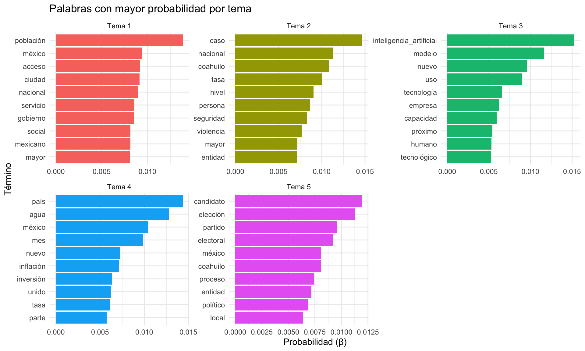
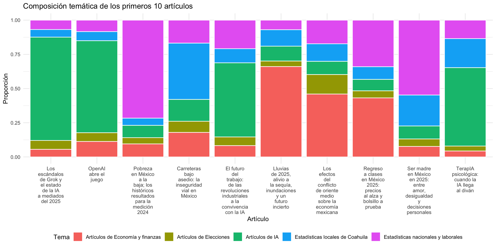
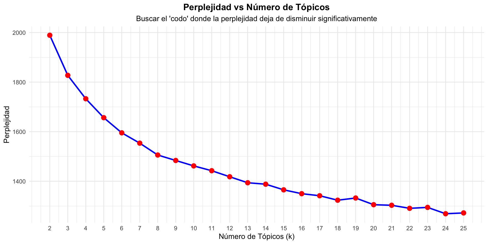
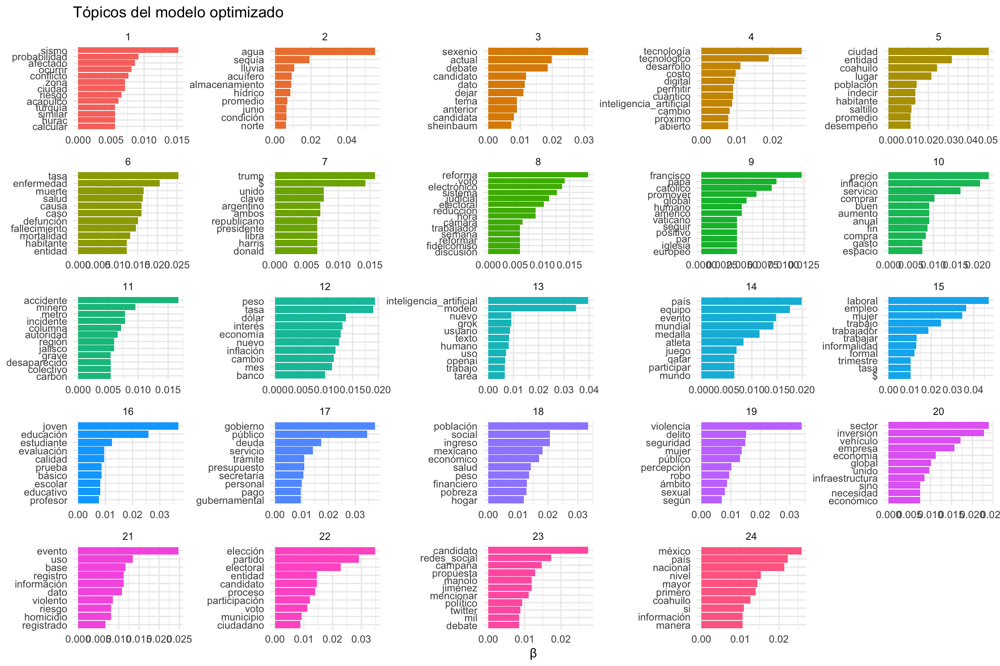

# Text Mining: funciones básicas para minería de texto
library(tm)
# Topic Models: implementa algoritmos de modelado de tópicos (LDA)
library(topicmodels)
# Tidy Text: análisis de texto con enfoque tidy
library(tidytext)
# Tidyverse: manipulación y visualización de datos
library(tidyverse)
# Lectura de archivos Excel
library(readxl)
# Construcción de expresiones regulares
library(rebus)
# Lematización y etiquetado gramatical (NLP)
library(udpipe)Tutorial: Modelado de Tópicos con LDA
Análisis de texto mediante Latent Dirichlet Allocation
1 Introducción
1.1 ¿Qué es el Modelado de Tópicos?
El modelado de tópicos (topic modeling) es una técnica de aprendizaje no supervisado que permite descubrir temas “ocultos” o “latentes” en una colección de documentos de texto. Es especialmente útil cuando tenemos grandes volúmenes de texto y queremos identificar automáticamente los temas principales que se discuten.
Aplicaciones comunes:
- Análisis de artículos periodísticos
- Clasificación de documentos académicos
- Análisis de opiniones en redes sociales
- Organización de correos electrónicos
- Descubrimiento de tendencias en investigación científica
1.2 ¿Qué es LDA?
LDA (Latent Dirichlet Allocation) es el algoritmo más popular para modelado de tópicos. Fue desarrollado por David Blei, Andrew Ng y Michael Jordan en 2003.
1.2.1 Supuestos del modelo:
- Cada documento es una mezcla de tópicos
- Cada tópico es una mezcla de palabras
- Las distribuciones siguen una distribución de Dirichlet
1.2.2 Conceptos clave:
- Tema/Tópico: Conjunto de palabras relacionadas con una temática específica
- Documento: Unidad de análisis (artículo, tweet, párrafo, etc.)
- Corpus: Colección completa de documentos
2 Configuración del Entorno
2.1 Librerías necesarias
3 Carga y Preparación de Datos
3.1 Lectura de datos
Para este tutorial, utilizamos artículos periodísticos previamente scrapeados de la web.
# Cargar artículos desde archivo Excel
articulos_juve <- read_excel("01_datos/tabla_archivos_juve.xlsx") %>%
select(titulos, textos) %>% # Seleccionar columnas relevantes
mutate(id = 1:nrow(.)) %>% # Crear ID único para cada documento
relocate(id, .before = titulos) # Mover ID al principio
# Visualizar estructura
glimpse(articulos_juve)Rows: 110
Columns: 3
$ id <int> 1, 2, 3, 4, 5, 6, 7, 8, 9, 10, 11, 12, 13, 14, 15, 16, 17, 18,…
$ titulos <chr> "TerapIA psicológica: cuando la IA llega al diván", "Regreso a…
$ textos <chr> "La idea de que una máquina proporcione terapia psicológica no…Estructura de los datos:
id: Identificador único del documentotitulos: Título del artículotextos: Contenido completo del artículo
4 Preprocesamiento de Texto
El preprocesamiento es crucial para el éxito del modelado de tópicos. Textos mal procesados generan temas incoherentes.
4.1 Pipeline de limpieza
Nota: ¿Qué es un pipeline?
Un pipeline (tubería o flujo de trabajo) es una secuencia ordenada de pasos de procesamiento donde la salida de un paso se convierte en la entrada del siguiente. En procesamiento de texto, cada paso transforma los datos de manera incremental hasta obtener el formato deseado.
# PASO 1: Generar stopwords (palabras vacías)
stop_words <- stopwords(kind = "spanish")
# Ejemplos: "el", "la", "de", "en", "y", "a", etc.
# PASO 2: Agregar límites de palabra a stopwords
stopwords_2 <- str_c("\\b", stop_words, "\\b")
# \\b asegura que solo se eliminen palabras completas
# Evita eliminar "la" dentro de "palabra"
# PASO 3: Limpieza completa del texto
articulos_juve2 <- articulos_juve %>%
# 3.1: Normalización a minúsculas
mutate(textos = str_to_lower(textos)) %>%
# 3.2: Eliminar puntuación
mutate(textos = str_remove_all(textos, pattern = "[:punct:]")) %>%
# 3.3: Eliminar stopwords
mutate(textos = str_remove_all(textos, c(or1(stopwords_2)))) %>%
# 3.4: Unir n-gramas importantes
# Convertir frases de varias palabras en un solo token
mutate(textos = str_replace_all(textos, c(
"redes sociales" = "redes_sociales",
"medio comunicación" = "medio_comunicacion",
"inteligencia artificial" = "inteligencia_artificial",
"\\bia\\b" = "inteligencia_artificial",
"nuevo león" = "nuevo_león",
"ciudad méxico" = "ciudad_de_méxico",
"jornada laboral" = "jornada_laboral"
))) %>%
# 3.5: Eliminar espacios múltiples
mutate(textos = str_squish(textos))
¿Por qué unir n-gramas?
Frases como “inteligencia artificial” tienen más significado juntas que separadas. Al unirlas con guiones bajos, el modelo las tratará como un solo término, capturando mejor el contexto.
5 Lematización
5.1 ¿Qué es la lematización?
La lematización convierte las palabras a su forma base o raíz:
- “corrieron” → “correr”
- “mejores” → “bueno”
- “hablando” → “hablar”
Esto reduce la dimensionalidad y agrupa variaciones de la misma palabra.
5.2 Implementación con UDPipe
# Descargar y cargar modelo de español
modelo <- udpipe_download_model(language = "spanish")
udmodel <- udpipe_load_model(modelo$file_model)
# Proceso de lematización y filtrado
lemas_juve <- udpipe_annotate(udmodel, x = articulos_juve2$textos) %>%
as_tibble() %>%
# Extraer ID del documento
mutate(id = str_extract(doc_id, pattern = "\\d+")) %>%
# Seleccionar columnas importantes
select(id, token, lemma, upos) %>%
# Filtrar puntuación
filter(upos != "PUNCT") %>%
# Eliminar números
mutate(is.number = str_detect(lemma, pattern = "\\d")) %>%
filter(!is.number) %>%
# Filtrado adicional manual
filter(!(lemma %in% c("él", "hacer", "poder", "año", "bien", "cada", "solo")))5.2.1 Columnas generadas por UDPipe:
| Columna | Descripción |
|---|---|
token |
Palabra original del texto |
lemma |
Forma base de la palabra |
upos |
Etiqueta gramatical universal (NOUN, VERB, ADJ, etc.) |
6 Creación de la Matriz DTM
6.1 ¿Qué es una DTM?
Una Matriz Documento-Término (Document-Term Matrix) es una representación numérica donde:
- Cada fila = un documento
- Cada columna = un término único
- Cada celda = frecuencia del término en ese documento
Ejemplo:
| perro | gato | casa | jardín | |
|---|---|---|---|---|
| Doc1 | 2 | 0 | 1 | 0 |
| Doc2 | 0 | 3 | 1 | 2 |
| Doc3 | 1 | 1 | 0 | 1 |
6.2 Código
dtm_juve <- lemas_juve %>%
group_by(id, lemma) %>%
count() %>% # Contar frecuencias
cast_dtm(document = id, # Convertir a formato DTM
term = lemma,
value = n)
# Visualizar estructura (primeras columnas)
dtm_juve %>% as.matrix() %>% as_tibble() %>% select(1:10)# A tibble: 110 × 10
abordar acceder acceso acelerar aceptable acercar aconsejar actual
<dbl> <dbl> <dbl> <dbl> <dbl> <dbl> <dbl> <dbl>
1 1 1 4 1 1 1 1 1
2 0 0 4 0 0 0 0 0
3 0 0 1 0 0 0 0 0
4 0 0 1 0 0 0 0 0
5 0 0 1 0 0 0 0 0
6 0 0 1 0 0 0 0 0
7 0 0 2 0 0 0 0 0
8 0 0 0 0 0 1 0 0
9 0 0 1 0 0 0 0 0
10 1 0 1 0 0 0 0 0
# ℹ 100 more rows
# ℹ 2 more variables: actualmente <dbl>, actuar <dbl>
Nota
Las DTM suelen ser matrices sparse (dispersas), con muchos ceros, porque cada documento solo contiene un subconjunto pequeño del vocabulario total.
7 Modelado LDA
7.1 Ajuste del modelo
lda_juve <- LDA(
x = dtm_juve, # Matriz DTM de entrada
k = 5, # Número de temas (hiperparámetro)
method = "Gibbs", # Método de muestreo
control = list(
seed = 1111 # Semilla para reproducibilidad
)
)7.1.1 Parámetros importantes:
- k: Número de tópicos a descubrir (debe elegirse cuidadosamente)
- method: Método de inferencia a utilizar
- “Gibbs” (Muestreo de Gibbs): Técnica de Markov Chain Monte Carlo (MCMC) que genera muestras de la distribución posterior iterativamente. Actualiza cada variable una a la vez, manteniendo las demás fijas. Es más lento pero generalmente más preciso.
- “VEM”: Variational Expectation-Maximization, una alternativa más rápida pero puede ser menos precisa
- seed: Semilla aleatoria para asegurar resultados reproducibles
8 Interpretación de Resultados
8.1 Matriz Beta (β)
Definición: La matriz Beta (β) contiene la probabilidad de cada palabra dado un tema.
Notación matemática (probabilidad condicional):
\[P(\text{palabra} \mid \text{tema}) = \beta\]
Esto se lee: “La probabilidad de observar una palabra dado que estamos en un tema específico es igual a beta”.
Pregunta que responde: “Si estoy hablando del tema Z, ¿qué tan probable es que use la palabra W?”
Ejemplo práctico: Si el tema es “deportes”, palabras como “gol”, “partido”, “equipo” tendrán valores altos de β.
# Extraer matriz beta
betas_juve <- tidy(lda_juve, matrix = "beta")
# Ver palabras del tema 2
betas_juve %>%
filter(topic == 2) %>%
arrange(-beta) %>%
print(n = 50)# A tibble: 7,670 × 3
topic term beta
<int> <chr> <dbl>
1 2 caso 0.0147
2 2 nacional 0.0113
3 2 coahuilo 0.0108
4 2 tasa 0.0100
5 2 nivel 0.00905
6 2 persona 0.00864
7 2 seguridad 0.00832
8 2 violencia 0.00767
9 2 mayor 0.00718
10 2 entidad 0.00710
11 2 mujer 0.00701
12 2 dato 0.00677
13 2 información 0.00669
14 2 méxico 0.00669
15 2 país 0.00620
16 2 mil 0.00612
17 2 enfermedad 0.00596
18 2 salud 0.00587
19 2 cifra 0.00587
20 2 muerte 0.00547
21 2 situación 0.00514
22 2 habitante 0.00473
23 2 alto 0.00465
24 2 homicidio 0.00465
25 2 causa 0.00457
26 2 si 0.00441
27 2 fallecimiento 0.00441
28 2 lugar 0.00441
29 2 sociedad 0.00433
30 2 defunción 0.00424
31 2 brindar 0.00416
32 2 pandemia 0.00408
33 2 último 0.00408
34 2 mortalidad 0.00408
35 2 registrado 0.00408
36 2 número 0.00408
37 2 evento 0.00408
38 2 mismo 0.00400
39 2 según 0.00392
40 2 presentar 0.00392
41 2 local 0.00384
42 2 ser 0.00384
43 2 accidente 0.00384
44 2 delito 0.00384
45 2 atención 0.00376
46 2 relevante 0.00376
47 2 debajo 0.00367
48 2 ocurrir 0.00367
49 2 público 0.00359
50 2 total 0.00359
# ℹ 7,620 more rows8.1.1 Visualización: Top 10 palabras por tema
bd_plot <- betas_juve %>%
group_by(topic) %>%
slice_max(beta, n = 10)
bd_plot %>%
mutate(term = reorder_within(term, beta, topic)) %>%
ggplot(aes(x = term, y = beta, fill = factor(topic))) +
geom_col(show.legend = FALSE) +
facet_wrap(~str_c("Tema ", topic), scales = "free") +
coord_flip() +
scale_x_reordered() +
labs(
title = "Palabras con mayor probabilidad por tema",
x = "Término",
y = "Probabilidad (β)"
) +
theme_minimal()
8.2 Matriz Gamma (γ)
Definición: La matriz Gamma (γ) contiene la probabilidad de cada tema dado un documento.
Notación matemática (probabilidad condicional):
\[P(\text{tema} \mid \text{documento}) = \gamma\]
Esto se lee: “La probabilidad de que un tema esté presente dado un documento específico es igual a gamma”.
Pregunta que responde: “Si estoy leyendo el documento D, ¿qué proporción de él trata sobre el tema Z?”
Ejemplo práctico: Un artículo sobre Copa del Mundo podría tener γ = 0.7 para “deportes”, γ = 0.2 para “noticias internacionales” y γ = 0.1 para “economía”.
# Extraer matriz gamma
gammas_juve <- tidy(lda_juve, matrix = "gamma")
# Crear catálogos
catalogo_articulos <- articulos_juve2 %>%
select(id, titulo = titulos) %>%
unique()
catalogo_temas <- tibble(
topic = 1:5,
tema = c(
"Estadísticas nacionales y laborales",
"Estadísticas locales de Coahuila",
"Artículos de IA",
"Artículos de Economía y finanzas",
"Artículos de Elecciones"
)
)
# Enriquecer gammas con metadatos
gammas_juve <- tidy(lda_juve, matrix = "gamma") %>%
mutate(document = as.numeric(document)) %>%
arrange(document, -gamma) %>%
left_join(catalogo_articulos, by = c("document" = "id")) %>%
left_join(catalogo_temas, by = "topic")8.2.1 Clasificación de documentos
Asignar cada documento al tema con mayor probabilidad:
lista_articulos_por_tema <- gammas_juve %>%
group_by(document) %>%
slice_max(gamma, n = 1)
# Revisar clasificación
lista_articulos_por_tema %>%
select(document, titulo, tema, gamma)# A tibble: 111 × 4
# Groups: document [110]
document titulo tema gamma
<dbl> <chr> <chr> <dbl>
1 1 TerapIA psicológica: cuando la IA llega al diván Artí… 0.573
2 2 Regreso a clases en México 2025: precios al alza y bols… Artí… 0.432
3 3 Pobreza en México a la baja; los históricos resultados … Esta… 0.717
4 4 OpenAI abre el juego Artí… 0.673
5 5 El futuro del trabajo: de las revoluciones industriales… Artí… 0.542
6 6 Los escándalos de Grok y el estado de la IA a mediados … Artí… 0.755
7 7 Lluvias de 2025, alivio a la sequía, inundaciones y un … Artí… 0.661
8 8 Carreteras bajo asedio: la inseguridad vial en México Esta… 0.412
9 9 Los efectos del conflicto de oriente medio sobre la eco… Artí… 0.460
10 10 Ser madre en México en 2025: entre amor, desigualdad y … Esta… 0.548
# ℹ 101 more rows8.2.2 Visualización: Composición temática
gammas_juve %>%
filter(document <= 10) %>%
ggplot(aes(x = reorder(titulo %>% str_wrap(10), gamma),
y = gamma,
fill = tema)) +
geom_col(color = "white", position = position_stack(reverse = TRUE)) +
labs(
title = "Composición temática de los primeros 10 artículos",
x = "Artículo",
y = "Proporción",
fill = "Tema"
) +
theme_minimal() +
theme(legend.position = "bottom")
9 Optimización del Número de Tópicos
9.1 El problema de k
El número de tópicos (k) es un hiperparámetro que debemos elegir. ¿Cómo saber cuántos temas son óptimos?
9.2 Perplejidad
La perplejidad es una métrica que evalúa qué tan bien el modelo predice los datos:
- Perplejidad baja = mejor ajuste
- Perplejidad alta = modelo pobre
\[ \text{Perplejidad} = \exp\left(-\frac{1}{N} \sum_{d=1}^{M} \log p(w_d)\right) \]
Donde:
- \(N\) = Número total de palabras en el corpus
- \(M\) = Número total de documentos
- \(w_d\) = Conjunto de palabras en el documento \(d\)
- \(p(w_d)\) = Probabilidad que el modelo asigna a las palabras del documento \(d\)
- \(\log\) = Logaritmo natural
- \(\exp\) = Función exponencial
La perplejidad mide, en esencia, cuán “sorprendido” está el modelo al ver nuevos datos. Un modelo con baja perplejidad predice bien las palabras de los documentos.
9.3 Grid Search
Probamos múltiples valores de k y elegimos el que minimiza la perplejidad:
# Definir rango de tópicos
k_values <- seq(2, 25, by = 1)
# Calcular perplejidad para cada k
perplexity_values <- sapply(k_values, function(k) {
cat("Calculando modelo con k =", k, "\n")
lda_model <- LDA(
dtm_juve,
k = k,
method = "Gibbs",
control = list(
seed = 1111,
iter = 2000, # Iteraciones
thin = 100, # Thinning
burnin = 1000 # Burn-in
)
)
perplexity(lda_model, newdata = dtm_juve)
})Calculando modelo con k = 2
Calculando modelo con k = 3
Calculando modelo con k = 4
Calculando modelo con k = 5
Calculando modelo con k = 6
Calculando modelo con k = 7
Calculando modelo con k = 8
Calculando modelo con k = 9
Calculando modelo con k = 10
Calculando modelo con k = 11
Calculando modelo con k = 12
Calculando modelo con k = 13
Calculando modelo con k = 14
Calculando modelo con k = 15
Calculando modelo con k = 16
Calculando modelo con k = 17
Calculando modelo con k = 18
Calculando modelo con k = 19
Calculando modelo con k = 20
Calculando modelo con k = 21
Calculando modelo con k = 22
Calculando modelo con k = 23
Calculando modelo con k = 24
Calculando modelo con k = 25 # Almacenar resultados
perplexity_results <- tibble(
k = k_values,
perplexity = perplexity_values
)9.3.1 Parámetros avanzados:
- iter: Número total de iteraciones (más = mejor convergencia)
- thin: Guardar cada n iteraciones (reduce autocorrelación)
- burnin: Descartar primeras n iteraciones (período de “calentamiento”)
9.4 Visualización de resultados
ggplot(perplexity_results, aes(x = k, y = perplexity)) +
geom_line(color = "blue", size = 1) +
geom_point(color = "red", size = 3) +
scale_x_continuous(breaks = k_values) +
labs(
title = "Perplejidad vs Número de Tópicos",
subtitle = "Buscar el 'codo' donde la perplejidad deja de disminuir significativamente",
x = "Número de Tópicos (k)",
y = "Perplejidad"
) +
theme_minimal() +
theme(
plot.title = element_text(hjust = 0.5, face = "bold"),
plot.subtitle = element_text(hjust = 0.5)
)Warning: Using `size` aesthetic for lines was deprecated in ggplot2 3.4.0.
ℹ Please use `linewidth` instead.
9.5 Identificar k óptimo
optimal_k <- perplexity_results %>%
filter(perplexity == min(perplexity)) %>%
pull(k)
cat("Número óptimo de tópicos:", optimal_k, "\n")Número óptimo de tópicos: 24 cat("Perplejidad mínima:", min(perplexity_values), "\n")Perplejidad mínima: 1268.911 9.6 Modelo con k óptimo
lda_model_optimo <- LDA(
dtm_juve,
k = optimal_k,
method = "Gibbs",
control = list(
seed = 1111,
iter = 2000,
thin = 100,
burnin = 1000
)
)
# Visualizar resultados
betas_optimo <- tidy(lda_model_optimo, matrix = "beta")
betas_optimo %>%
group_by(topic) %>%
slice_max(beta, n = 10) %>%
ungroup() %>%
mutate(term = reorder_within(term, beta, topic)) %>%
ggplot(aes(x = term, y = beta, fill = factor(topic))) +
geom_col(show.legend = FALSE) +
facet_wrap(~topic, scales = "free") +
coord_flip() +
scale_x_reordered() +
labs(
title = "Tópicos del modelo optimizado",
x = NULL,
y = "β"
) +
theme_minimal()
10 Consideraciones Finales
10.1 Balance entre métricas y practicidad
No todo es perplejidad
Aunque la perplejidad es una métrica útil, no es el único criterio:
- Perplejidad baja no siempre significa temas interpretables
- Un k muy alto puede generar temas redundantes o difíciles de etiquetar
- Un k muy bajo puede perder matices importantes
Recomendación: Balancear perplejidad con interpretabilidad humana
10.2 Validación de temas
Para validar que los temas tienen sentido:
- Revisar las palabras principales de cada tema
- Leer documentos representativos de cada tema
- Consultar con expertos del dominio
- Comparar con clasificaciones existentes (si las hay)
11 Conclusiones
El modelado de tópicos con LDA es una herramienta poderosa para:
- Descubrir temas automáticamente en grandes colecciones de texto
- Organizar y clasificar documentos
- Identificar tendencias y patrones temáticos
Pasos clave del pipeline:
- Preprocesamiento riguroso del texto
- Lematización para reducir dimensionalidad
- Creación de matriz DTM
- Ajuste del modelo LDA
- Interpretación de matrices β y γ
- Optimización de k mediante perplejidad
Limitaciones:
- Requiere selección cuidadosa de k
- Interpretación de temas puede ser subjetiva
- Sensible a la calidad del preprocesamiento
- Asume que los documentos hablan de múltiples temas (mezcla)
12 Referencias
- Blei, D. M., Ng, A. Y., & Jordan, M. I. (2003). “Latent Dirichlet Allocation”. Journal of Machine Learning Research, 3, 993-1022.
- Silge, J., & Robinson, D. (2017). Text Mining with R: A Tidy Approach. O’Reilly Media.
- Documentación de
topicmodels: https://cran.r-project.org/web/packages/topicmodels/ - Documentación de
tidytext: https://www.tidytextmining.com/
13 Apéndice: Código Completo
Code
# Ver archivo: código_visto_en_clase.R
# para el código completo ejecutable
Para profundizar
- Experimenta con diferentes valores de k manualmente
- Prueba con diferentes conjuntos de stopwords
- Compara LDA con otros algoritmos (NMF, LSA)
- Explora modelos más recientes basados en transformers